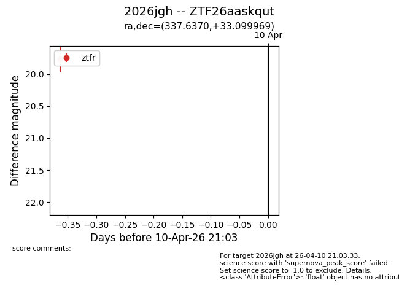
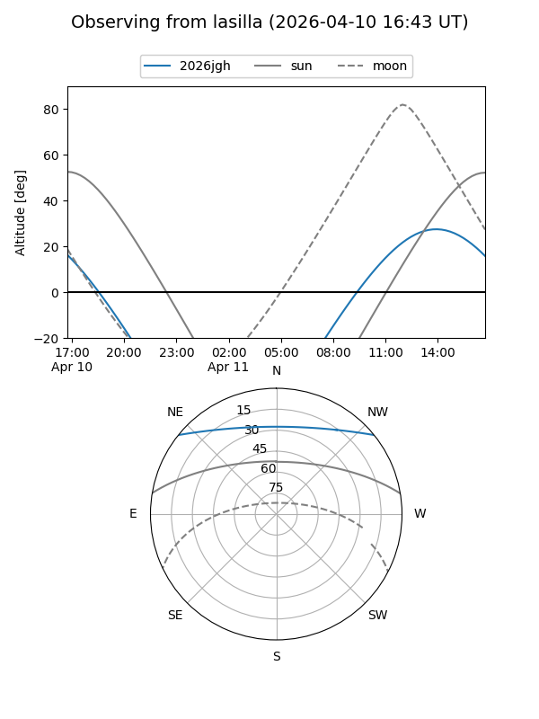
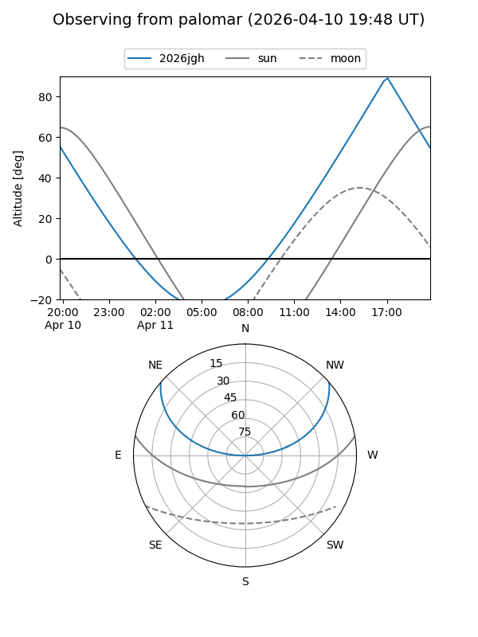

2026jgh
Target 2026jgh at 2026-04-10 21:10
Aliases and brokers:
FINK: link
Lasair: link
ALeRCE: link
TNS: link
YSE: link
alt names
ZTF26aaskqut (ztf,fink_ztf)
2026jgh (tns,yse)
Coordinates:
equatorial (ra, dec) = 337.6370,+33.09997
equatorial (HMS+DMS) = 22:30:32.89,+33:05:59.89
galactic (l, b) = (91.7411,-21.10318)
Flags:
Photometry:
last ztfr=19.76
1 ztfr detections
Lightcurve

Visibility


Additional plots